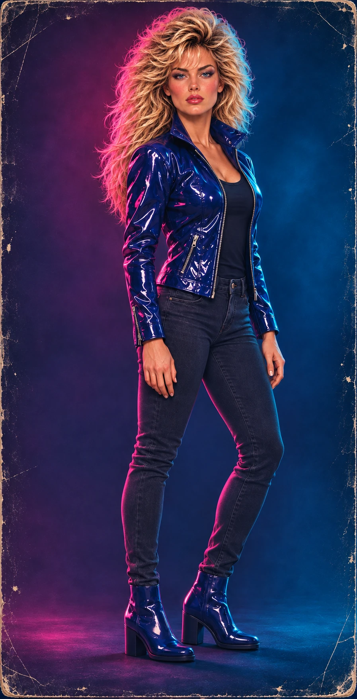

Songs for the long way home.
Signal & Spark makes 1980s-style synth-pop and dance-rock: big synths, bigger choruses, and songs made for a night drive.
Driving synths and big choruses carry songs about holding on too tightly, learning to put something down, and letting another voice reach you when your own thoughts get loud. There’s room here for ambition, exhaustion, doubt, and the occasional reckless bit of hope.
Sometimes moving forward means stepping into the light. Sometimes it means leaving the questions unanswered.
Listen to Signal & Spark on YouTube →
Hear first when new songs drop: join the list →
Leave a little static.
Back to the music